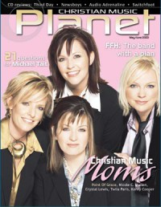

Point of Grace
|  May 2003 Christian Music Planet |
 May 2012 CCM Digital |
Media coverage
- Nov 1993 in CCM "Faces: Point of Grace", by Sissy Goff
- Feb 1994 in The Lighthouse "Point of Grace", by J. Warner Soditus
- Mar 1994 in Christian Single "Profile: Four Women Find Grace at the Point of Success", by Deborah Evans Price
- Mar 1995 in CCM "Tired and True", by Deborah Evans Price
- May 1995 in CCM "In The News: Christian Music Finds Widespread Attention", by April Hefner, Mark A Smeby
- Sep 1996 in Campus Life "Back To School With Point of Grace", by Chris Lutes
- Sep 1996 in CCM "Road Life", by April Hefner
- Nov 1996 in Today's Christian Woman "Christian Music's Dream Team Grows Up", by Camerin J. Courtney
- Jan 1997 in CCM "In Concert: Pepsi Coliseum, Indianapolis, Indiana", by Melanie Friebel
- Jul 1998 in Church Musician Today "A Weather Update on Point of Grace", by Betty McLellan Jones
- Sep 1998 in CCM "Saving Grace", by Lindy Warren
- Sep 1998 in CCM "The Fall Tour: Steady On The Road", by Lindy Warren
- Nov 1998 in Campus Life "Up Close & Personal", by Chris Lutes
- Dec 1998 in CCM Brasil "Gravando com Point of Grace", by Lindy Warren
- Apr 1999 in Christian Single "Profile: Heather Floyd - Getting to the Point", by Deborah Evans Price
- Mar 2000 in Living With Teenagers "Under the Influence: In Concert: Point of Grace", by Mike Nappa
- Aug 2000 in CCM "Is Christian Music Making a Difference?: Is Christian Music Making a Difference?"
- Jun 2001 in CCM "Of Grace & Girls", by Melissa Riddle
- Dec 2001 in CCM "On Tour: Cumberland County Civic Auditorium, Fayetteville, NC", by David McCreary
- Feb 2002 in CCM "Valentine's Day: The Joy of Marriage", by Deborah Evans Price
- Feb 2002 in CCM "Spin Control: A Dating Story"
- Sep 2002 in Campus Life "Getting Real", by Mark Moring
- May 2003 in Christian Music Planet "Christian Music Moms", by Jenni Isaac
- Jul 2003 in CCM "It's Our Blockbuster Summer... Artists: Style Squad"
- Sep 2003 in Today's Christian Woman "Growing In Grace"
- Jan 2004 in CCM "Insider: Point of Grace's New Look"
- May 2004 in CCM "Insider: Point of Grace", by Deborah Evans Price
- Aug 2004 in CCM "Point of Entry", by Michael Nolan
- Aug 2004 in CCM "Points of Interest"
- Apr 2005 in CCM "Standing Room Only: "I Choose You" Tour", by Andy Argyrakis
- Sep 2005 in Prism "Singing For Change", by Linda Owen
- Dec 2005 in CCM "5 Questions With: Leigh Cappillino (Point of Grace)"
- Apr 2006 in CCM "Breakfast Feedback", by Jay Swartzendruber
- Aug 2006 in CCM "Lead Me On", by Kristi Henson
- Mar 2010 in CCM Digital "'x' Things You Need to Know About...: Point of Grace", by Andy Argyrakis
- Apr 2010 in CCM Digital "Hope Continued", by Matt Conner
- Oct 2010 in CCM Digital "In the Studio: Point of Grace", by Andrew Greer
- May 2012 in CCM Digital "It's the Little Things", by Caroline Lusk
- Nov 2012 in CCM Digital "Your World: Point of Truth: Where Grace and Girls Collide", by Caroline Lusk
- 1 Dec 2015 in CCM Digital "Christmas & Communion: The More Harmonies, The Better"
- 15 Dec 2017 in CCM Digital "Heart For The Holidays", by Andrew Greer
Albums & reviews:
1993: Point of Grace
- Dec 1993 in Religious Broadcasting, by Darlene A. Peterson
- Dec 1993 in The Lighthouse, by Bruce A. Rothwell
- Feb 1994 in CCM, by April Hefner
- Mar 1994 in Today's Christian Woman
- Mar 1994 in Moody, by Anita Lustrea
1995: The Whole Truth
- Feb 1995 in CCM, by Mark A Smeby
- Mar 1995 in Today's Christian Woman, by Camerin J. Courtney
- May 1995 in Christian Single, by Paula Sutton
- May 1995 in Moody, by Eric Tijerina
- Jul 1995 in Campus Life
1996: Life, Love, and Other Mysteries
- Sep 1996 in CCM, by Laura Harris
- Dec 1996 in Christian Single, by Mark A Smeby
1998: Steady On
- Aug 1998 in Aspire
- Aug 1998 in CCM, by Lou Carlozo
- Sep 1998 in Today's Christian Woman
- Sep 1998 in Campus Life, by Carla Barnhill
- Oct 1998 in Christian Single, by Mike Parker
- Nov 1998 in CCM Brasil, by Melissa Riddle
- Feb 1999 in Church Musician Today, by Shannon Dietor-Hartley
1998: Steady On [Enhanced CD]
1999: A Christmas Story
- Nov 1999 in YouthWorker, by Dave Urbanski
- Nov 1999 in Today's Christian Woman
- Nov 1999 in Campus Life, by Martin Cockroft
- Nov 1999 in CCM, by Michael Fernandez
2000: Rarities and Remixes
2001: Free to Fly
- May 2001 in CCM, by Melissa Riddle
- May 2001 in Campus Life, by Chris Lutes
- Jul 2001 in YouthWorker, by Dave Urbanski
- Jul 2001 in Today's Christian Woman
- Dec 2001 in Church Musician Today, by Shannon Dietor-Hartley
2002: Girls of Grace
- Aug 2002 in CCM, by Marcia Bartenhagen
- Sep 2002 in Today's Christian Woman
- Oct 2002 in Charisma & Christian Life, by Margaret Feinberg
- Nov 2002 in YouthWorker, by Dave Urbanski
- Mar 2003 in Living With Teenagers, by Joy Fisher
2003: 24
2004: I Choose You
- Nov 2004 in CCM, by Li Liu
- Nov 2004 in Today's Christian Woman, by Lisa Ann Cockrel
- Mar 2005 in Living With Teenagers, by Joy Fisher
- Apr 2005 in Christian Single, by Andy Argyrakis
2007: How You Live
- Sep 2007 in CCM, by Lindsay Williams
- Oct 2007 in Worship Leader
- Nov 2007 in YouthWorker, by Deborah Evans Price, Lindsay Williams
- Nov 2007 in Today's Christian Woman
2008: Tennessee Christmas: A Holiday Collection
2010: Home for the Holidays
- Nov 2010 in Worship Leader, by Randy Cross
- Nov 2010 in CCM Digital, by Andy Argyrakis
- Dec 2010 in Christianity Today, by Andrew Greer
2010: No Changin' Us
- Mar 2010 in CCM Digital, by Matt Conner
- May 2010 in Christianity Today, by Andrew Greer
- May 2010 in Worship Leader, by Daryl Bean
- Jul 2010 in Living With Teenagers, by Randy Williams
2012: A Thousand Little Things
- Jun 2012 in CCM Digital, by Grace S. Aspinwall
- Aug 2012 in Living With Teenagers, by Randy Williams
2015: Directions Home (Songs We Love, Songs You Know)
- Apr 2015 in Charisma, by Felicia Abraham
- 1 Jun 2015 in CCM Digital, by Andy Argyrakis
2017: Sing Noel
2018: Beautiful Name – Hymns & Worship Songs
2023: Turn Your Eyes (Songs We Love, Songs You Know) Volume II
Award Summary (Nominations / Wins)
Dove Awards- Group of the Year
- Artist
- Inspirational Recorded Song: "Jesus Will Still Be There"
- Pop/Contemporary Album: The Whole Truth
- Group of the Year
- Artist
- Pop/Contemporary Recorded Song: "The Great Divide"
- Pop/Contemporary Album: Life, Love, and Other Mysteries
- Group of the Year
- Artist
- Pop/Contemporary Recorded Song: "Keep The Candle Burning"
- Group of the Year
- Artist
- Pop/Contemporary Recorded Song: "Circle Of Friends"
- Pop/Contemporary Album: Steady On
- Group of the Year
- Artist
- Inspirational Recorded Song: "When The Wind Blows"
- Pop/Contemporary Recorded Song: "Steady On"
- Enhanced CD: Steady On [Enhanced CD]
- Pop/Contemporary Album: A Christmas Story
- Group of the Year
- Artist
- Group of the Year
- Pop/Contemporary Album: Free to Fly
- Group of the Year
- Inspirational Recorded Song: "He Sends His Love"
- Pop/Contemporary Recorded Song: "Blue Skies"
- Special Event Album: Girls of Grace
- Pop/Contemporary Album: How You Live
- Group of the Year
- Artist
- Country Recorded Song: "How You Live (Turn Up The Music)"
- Country Recorded Song: "I Wish"
- Country Recorded Song: "King Of The World"
- Country Album: No Changin' Us
- Country Recorded Song: "There Is Nothing Greater Than Grace"
- Christmas Album: Home for the Holidays
- Country Album: A Thousand Little Things
- Country Recorded Song: "Only Jesus"
- Bluegrass/Country Album: Directions Home (Songs We Love, Songs You Know)
- Inspirational Album: Turn Your Eyes (Songs We Love, Songs You Know) Volume II
- Bluegrass/Country/Roots Recorded Song: "Matchless"
- 1996 Grammy Awards
- Best Pop/Contemporary Gospel Album: Life, Love, and Other Mysteries
- Best Pop/Contemporary Gospel Album: Steady On
- Best Roots Gospel Album: Directions Home (Songs We Love, Songs You Know)
- 2001 Billboard Music Video Awards
- Best Clip, Contemporary Christian: "Begin With Me"
Books about Point of Grace
- "The Passions of the Compassionate" in Soul2Soul (Christopher L Coppernoll, 1998).
- "The Message" in Soul2Soul (Christopher L Coppernoll, 1998).
- "Point of Grace" in The Encyclopedia of Contemporary Christian Music (Mark Allan Powell, 2002).
- "Point of Grace" in The Billboard Guide to Contemporary Christian Music (Barry Alfonso, 2002).
© 2011 CMnexus. Last updated August 2025. Contact: editor -AT- cmnexus -DØT- org